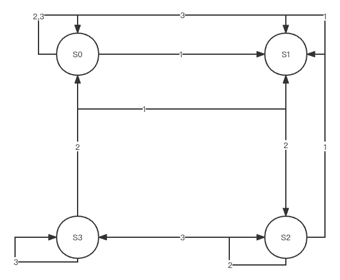
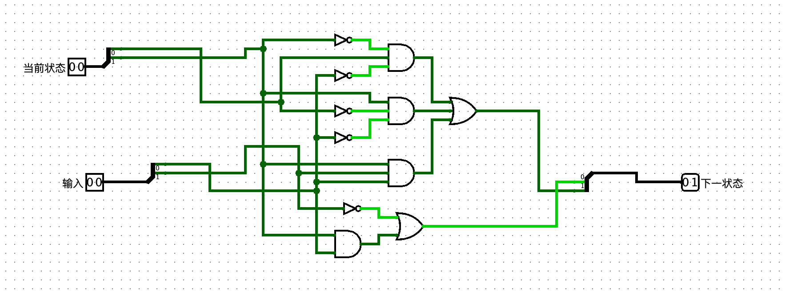
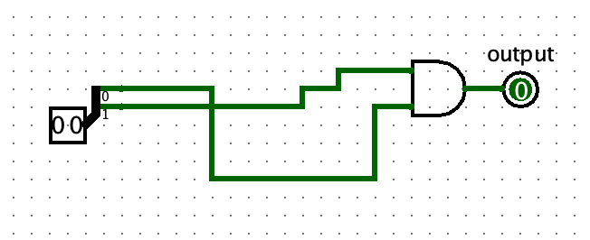
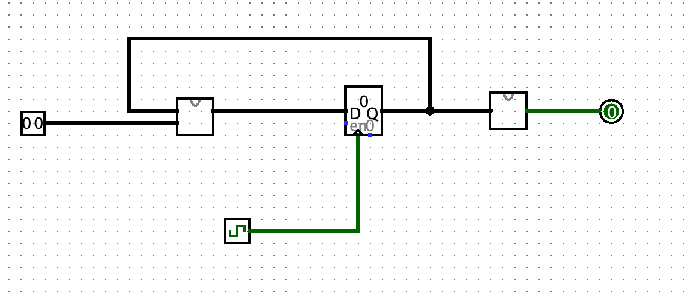

Moore型有限状态机例题
实验任务
你需要搭建一个Moore型
实验具体要求
小刘同学在每个时钟上升沿到来时说1、2、3中的任意一个数，由于小刘同学比较笨，他可能连续几次说出同一个数，只要总体顺序没错，我们原谅他。只要他能顺序不错地最终数出1、2、3的顺序正确的序列（例如“1 1 1 2 2 3 3 3 3”、“1 2 3”、“1 2 3 3”……，即文法满足：“<若干个1><若干个2><若干个3>”），就算对（输出1）！
为了使大家更好地理解题目意思，我们给出一些测试样例供大家参考：
样例1：
| 输入（时钟上升沿） | 1 | 2 | 1 | 1 | 1 | 2 | 3 | 3 | 3 | 1 | 2 | 3 | 1 | 1 | 2 | 1 |
|---|---|---|---|---|---|---|---|---|---|---|---|---|---|---|---|---|
| 输出 | 0 | 0 | 0 | 0 | 0 | 0 | 1 | 1 | 1 | 0 | 0 | 1 | 0 | 0 | 0 | 0 |
样例2：
| 输入（时钟上升沿） | 2 | 2 | 3 | 3 | 1 | 2 | 3 | 1 | 3 | 1 | 2 | 3 | 1 | 1 | 2 | 3 |
|---|---|---|---|---|---|---|---|---|---|---|---|---|---|---|---|---|
| 输出 | 0 | 0 | 0 | 0 | 0 | 0 | 1 | 0 | 0 | 0 | 0 | 1 | 0 | 0 | 0 | 1 |
实验流程
通过实验要求做出状态转移图(S0表示初始状态，S1表示当前输入为1，S2表示当前输入为12，S3表示当前输入为123)

通过状态转移图写出状态转移表
当前状态 输入 下一状态 S0 1 S1 S0 2 S0 S0 3 S0 S1 1 S1 S1 2 S2 S1 3 S0 S2 1 S1 S2 2 S2 S2 3 S3 S3 1 S1 S3 2 S0 S3 3 S3 通过状态转移表建立状态转移电路

通过输出要求建立输出电路

利用寄存器把输入、状态转移电路、输出电路联系起来
